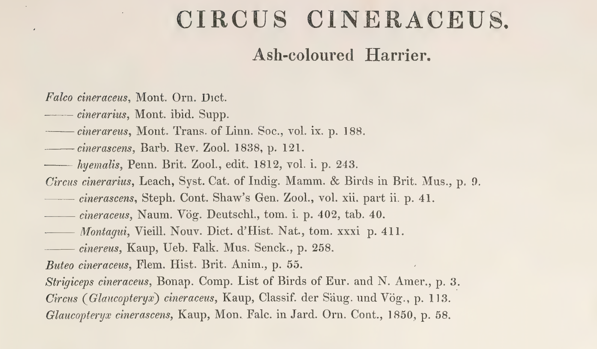

← Back to Gould’s Library
How to Find a Cited Work Without a Direct Link
A working guide to 19th-century citation detective work, written from the actual research trail behind Gould’s Library — including the dead ends.

Every entry in Gould’s Library now shows a working link to the actual book or journal it cites. But a link is the answer, not the method. If you were handed one of Gould’s citations cold — something like:
Falco cinerascens, Barb. Rev. Zool. 1838, p. 121.
— with no link at all, how would you actually go about finding it? That's a real, transferable research skill, useful for any old citation in any field, not just birds. This page walks through the method, using real cases from this project where the search took real work — including two where the first answer we found was confidently wrong.
1. Decode the shorthand first
Old citations are compressed almost to the point of being a private code. Barb. Rev. Zool. 1838, p. 121 breaks down into four separate pieces, and you need all four before you can search intelligently: an author abbreviation (Barb.), a work abbreviation (Rev. Zool.), a year (1838), and a page (p. 121). Do this decoding step deliberately, on paper or in a note, before you search anything. A citation you haven’t fully parsed will send you in circles.
Some abbreviations are guessable from context (Rev. Zool. is almost certainly some "Revue Zoologique"). Others need a specialized reference: 19th-century zoological writing followed fairly standard abbreviation conventions for journal titles, and the Biodiversity Heritage Library's own author and title indexes (see below) are often the fastest way to expand one you don't recognize, since you can search the abbreviation itself and see what full titles BHL already associates with it.
AI (Gemini) suggests as follows:
Before turning to the library search engines below, here's what an AI research assistant (Gemini) proposed when asked to help resolve the Rev. Zool. abbreviation from the Barbieri citation above. As with any AI-sourced lead in this project, treat it as a starting point to verify, not a finished answer — see the Sclater/Ibis case study further down this page for what happens when that verification step gets skipped.
Primary databases & registries
Resolving “Rev. Zool.”
Because Rev. (Revue) and Zool. (Zoologique / Zoologie) are standardized ISO abbreviations, Rev. Zool. is ambiguous on its own. Depending on the publication year, region, or taxon involved, it almost always refers to one of the following historical journals:
- Revue Zoologique (Paris, 1838–1848) — published by the Société Cuvierienne. Very common in 19th-century descriptions (birds, insects, mammals).
- Revue et Magasin de Zoologie Pure et Appliquée (Paris, 1849–1879) — the direct successor to the Revue Zoologique. Often shortened to
Rev. Zool. or Rev. Mag. Zool.
- Revue de Zoologie Africaine (Tervuren, Belgium, 1911–1973) — focuses on African fauna. Later expanded to Revue de Zoologie et de Botanique Africaines (
Rev. Zool. Bot. Afr.). Often cited simply as Rev. Zool. Afr. or Rev. Zool.
- Revue Suisse de Zoologie (Geneva, 1893–present) — standard ISO abbreviation is
Rev. Suisse Zool., but older references occasionally truncate it to Rev. Zool. if context was implied.
Rule of thumb, per Gemini: if the paper is from the mid-1800s, it is almost certainly the French Revue Zoologique (or Revue et Magasin). If it involves African biodiversity from the 20th century, it points to Revue de Zoologie Africaine.
2. Search the actual digitized-library ecosystem, not just Google
A generic web search for an old citation often turns up nothing, or worse, a confident-looking wrong answer (see the warning below). The material you actually want almost always lives in one of a handful of large historical-scanning projects, and it's worth learning to search each of them directly rather than relying on a search engine to find them for you.
On every one of these, search the expanded title in quotation marks, plus the year — not the abbreviation, and not a loose paraphrase. "Revue Zoologique" 1838 finds things; Barb Rev Zool mostly doesn't.
The full directory: every library Gould's Library actually used
The 414 citations resolved on Gould's Library page didn't come from one place — they're scattered across more than two dozen different digital libraries, each with its own scope, its own strengths, and its own reason for existing. Below is every one of them, so you know what you're actually looking at when a search leads you there. Where a citation you're chasing turns out not to be in any of these, that's often a sign the work is held by a specialist library not listed here yet — for instance, Jan found a citation in this project himself using the Real Jardín Botánico's own digital library in Madrid (bibdigital.rjb.csic.es), a botanical-garden library not otherwise needed for this bird-focused project but exactly the kind of specialist collection worth knowing exists.
The big general-purpose archives
Biodiversity Heritage Librarybiodiversitylibrary.orgused 200 times
A consortium of natural-history museum, botanical-garden, and research libraries (the Smithsonian, the Natural History Museum London, Harvard, Kew, and dozens more) that jointly digitize their own historical collections. Purpose-built for exactly this kind of work — it holds more old zoological and botanical literature, fully text-searchable, than any other single site, which is why it's by far the most-used source in this project. Its reputation rests on being run directly by the institutions that hold the original books, not a third party.
Internet Archivearchive.orgused 120 times
A general-purpose nonprofit digital library (San Francisco), scanning everything from software to web pages to millions of public-domain books — including many old journals BHL doesn't carry, and full-text search across its entire holdings. Less specialized than BHL, but bigger and often has a scan nothing else does.
HathiTrustbabel.hathitrust.org / catalog.hathitrust.orgused 4 times
A partnership of major North American and European research university libraries (Michigan, California, Cornell and others founded it) pooling their own scanned collections. Especially strong for complete runs of long-running journals across many decades, since member libraries often hold a full bound set where a single library elsewhere might have gaps.
Google Booksbooks.google.com / books.google.deused 20 times
Google's own decades-long book-scanning project, run in partnership with major libraries worldwide. Enormous in scale, and sometimes has a specific volume/year that the specialist archives above don't — worth a direct search even after checking them, precisely because its coverage doesn't fully overlap with theirs.
National and university digital libraries
Deutsche Digitale Bibliothek (German Digital Library)deutsche-digitale-bibliothek.deused 18 times
Germany's national cultural-heritage portal, run by the Prussian Cultural Heritage Foundation, aggregating collections from thousands of German museums, archives, and libraries into one searchable index. The go-to first stop for German-language 19th-century natural history works.
Gallicagallica.bnf.frused 5 times
The digital library of the Bibliothèque nationale de France, France's national library. The standard first stop for French-language works — it holds an enormous share of everything published in France before the 20th century.
Munich Digitization Center (MDZ)digitale-sammlungen.de
Run by the Bavarian State Library, one of Germany's largest research libraries, with one of the biggest historical-book digitization programmes in Europe.
Heidelberg University Librarydigi.ub.uni-heidelberg.de
Germany's oldest university library, with a long-running, well-regarded digitization programme covering its own historical holdings, especially strong for older German scientific journals.
Göttingen Digitization Centre (GDZ)gdz.sub.uni-goettingen.de
Run by Göttingen State and University Library, one of the pioneering German digitization centres, known specifically for its historical scientific and scholarly journal runs.
Thuringian University and State Library Jena (ThULB / urMEL)zs.thulb.uni-jena.de
Jena's university and state library, which digitizes and hosts historical German regional and scientific serials through its "urMEL" platform — useful for narrower regional natural-history journals that larger archives sometimes miss.
e-rara.che-rara.chused 2 times
A shared platform for digitized rare books held by Swiss libraries (ETH Zurich, the Zentralbibliothek Zürich, and other Swiss institutions contribute to it jointly) — the equivalent, for Switzerland, of what Gallica is for France.
Biblioteka Cyfrowa (Digital Library of Lower Silesia / Wrocław University Library)bibliotekacyfrowa.pl
A regional Polish digital library network centred on Wrocław, digitizing historical material connected to Lower Silesia (formerly the German region of Silesia) — relevant here because a number of older German natural-history works were published or held in what's now western Poland.
Odyssée — Aix-Marseille Universitéodyssee.univ-amu.fr
Aix-Marseille University's own heritage digital library, with over a million digitized pages from its historical collections — one of several French university libraries (alongside the Lorraine one below) that digitize their own older holdings independently of Gallica.
Pulsar — Université de Lorrainepulsar-bu.univ-lorraine.fr
The University of Lorraine's own portal for its libraries' historical/heritage document collections — another university-level French digitization project distinct from the national Gallica collection.
State Museum of Natural History, Lviv (SMNH)lib.smnh.org
The scientific library of the State Museum of Natural History of the National Academy of Sciences of Ukraine, in Lviv — a specialist natural-history library digitizing rare older works from its own holdings, including works not easily findable through the bigger Western-European or American archives.
Real Jardín Botánico (CSIC) Digital Librarybibdigital.rjb.csic.es
The digital library of Spain's Royal Botanical Garden in Madrid, part of the Spanish National Research Council (CSIC). A specialist botanical/natural-history collection, and a good reminder that a citation you can't find in the general archives may well be sitting in a smaller institutional library built around exactly its subject.
Library of Congressloc.gov
The United States' national library, with its own large digitized collection of historical books and serials — the American equivalent of a Gallica or a Deutsche Digitale Bibliothek.
Journals, reference works, and scholarly indexes
Oxford University Press journals platformacademic.oup.com
The modern publisher and online host of long-running academic journals, including The Ibis itself — useful for confirming a journal's current publisher and sometimes for accessing more recent volumes than the historical archives cover.
Wiley Online Libraryonlinelibrary.wiley.com
One of the largest academic publishers' own journal platforms — relevant when a historical journal is still published today under a modern commercial imprint.
DOI.orgdoi.org
Not a library itself, but the resolver for Digital Object Identifiers — a permanent-link system used across academic publishing. A doi.org link redirects to wherever the actual publisher currently hosts a work, so it's a reliable way to cite something whose hosting might change over time.
Wikipedia / Wikisource / Wikimedia Speciesen.wikipedia.org / en.wikisource.org / species.wikimedia.orgused 9 times
Not primary sources themselves, but useful starting points: Wikipedia and its sister project Wikisource (which hosts full transcribed public-domain texts) can confirm an author's dates, a work's full title, or a species' current taxonomic status quickly — genuinely useful for orientation, but never a substitute for checking the actual primary source.
Darwin Onlinedarwin-online.org.uk
"The Complete Work of Charles Darwin Online," an academic project (led by historian John van Wyhe, based at the National University of Singapore) that has assembled the single most complete online collection of Darwin's own publications and manuscripts anywhere — the standard scholarly reference for anything Darwin actually wrote.
3. Pin the exact volume before you trust any page number
A page number is meaningless on its own. Most 19th-century journals ran for decades under the same title, so p. 297 could belong to any one of thirty different physical volumes. Always confirm you have the specific year/volume the citation actually names before you go looking for a page inside it — and remember that a journal's internal volume numbering (Tome I, Vol. IV) doesn't always match its calendar year in an obvious way, so check both.
4. Verify before you trust it — read the actual page, not just an index entry
This is the step most people skip, and it's the one that causes the most false leads. An index or bibliography entry pointing you to a work is a lead, not a confirmation. Bibliographic indexes from this era are dense, multi-column, and were themselves typeset by hand — it's easy for an old index to send you to the wrong page, the wrong volume, or even the wrong journal entirely. Always open the actual source page and read the actual passage before you consider a citation resolved.
Case study — the Barbieri citation
Gould's citation read cinerascens, Barb. Rev. Zool. 1838, p. 121. Jan located and uploaded the actual 1838 volume of Revue Zoologique, par la Société Cuvierienne. Searching its own alphabetical index turned up a promising lead: "Falco cinerascens (Ois.) Barbier-Montault ... 121." But the real confirmation only came from turning to page 121 itself and reading the article that starts there — "Notice sur les mœurs du Busard Montagu, Falco cinerascens, Temm., par M. Barbier Montault de Loudun" — which matched Gould's citation exactly, right down to the species name and page. The index pointed the way; the actual page proved it.
5. Watch out for confident-sounding wrong answers
This is the most important lesson from this whole project, and it applies whether the wrong answer comes from an AI tool, an old secondary source, or your own hunch. A very specific, confident answer is not the same thing as a correct one — specificity is not evidence. The only thing that counts is checking the claim against the actual primary source, yourself, every time.
Case study — the Sclater/Ibis citation, and a fabricated "solution"
Gould's citation for the Pomarine Skua read Lestris pomatorhinus, Sclater, Ibis, 1862, p. 297. An AI research assistant (Gemini) confidently proposed that this citation contained a "double clerical error" — that the real author was someone else entirely, the real year was 1863, and the real source was a different paper in a different journal, even producing an "exact" quoted passage supposedly from page 297: a specific species number, a specific Latin name, formatted exactly like genuine 19th-century text.
None of it held up. Checking the real paper it pointed to showed it was actually published in a completely different journal than claimed (confirmed independently two separate ways). And once Jan supplied the actual 1863 volume of The Ibis, page 297 turned out to contain something else altogether — a totally unrelated bird description, with no species numbered as claimed anywhere in the volume. The "exact quoted passage" had been invented outright.
The real answer, found separately: Gould's original citation had been correct all along. A different, genuine ornithologist (Alfred Newton), writing the very next year in a different article entirely, happened to independently cite the exact same Sclater note — same author, same journal, same year, same page — confirming it by coincidence rather than by design. The lesson isn't "don't use AI tools" — it's that any claim, however confident or detailed, needs to be checked against a real page before it goes in the record.
Case study — the Lapeyrouse citation, a near-identical trap avoided twice
A separate AI-sourced lead for this citation got the translator's name wrong and misidentified which year a German volume-numbering convention referred to — both caught only because the actual named individuals and dates were independently cross-checked against library catalogue records, rather than taken on trust. The eventual real resolution came from a full-text search of the actual source document for a distinctive species name Gould himself used in his citation — a technique worth remembering: when you have the source narrowed down to one document, search inside it for the single most unusual word in the citation, not a common one.
A practical checklist
- Write out the citation's four parts separately: author, work title (expanded, not abbreviated), year, page.
- Search the expanded title in quotation marks plus the year, directly on BHL, archive.org, and HathiTrust in turn — don't rely on one search engine query to surface all three.
- If the work isn't in English, go straight to that country's national digital library rather than assuming an English-language archive will have it.
- Once you find a candidate volume, confirm its exact year/volume number matches the citation before going further — a title match alone isn't enough.
- Open the actual page the citation names and read the actual passage. An index or bibliography entry is a lead, never a confirmation.
- If a claim (from any source, AI or otherwise) gives you a suspiciously exact quote or detail, verify it against the primary page yourself before trusting it — confidence and detail are not evidence.
- Where possible, look for independent corroboration — a second, unrelated source that happens to cite the same thing is much stronger evidence than one source alone.
- Write down what you actually confirmed and how, honestly — including anything you couldn't verify. A citation record that admits its own gaps is more trustworthy than one that quietly guesses.
"My students would have given up on the citation searching." — if you're a student reading this: you now have the exact method a real research project used to resolve citations that had gone unidentified for years. It takes patience, and most leads turn out to be wrong before one turns out to be right — that's normal, not a sign you're doing it badly.